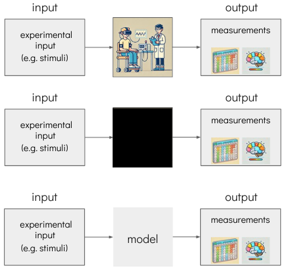
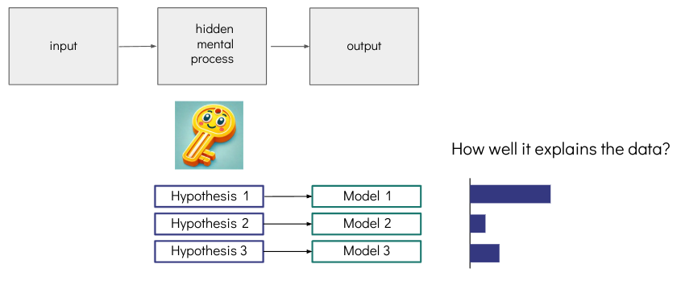
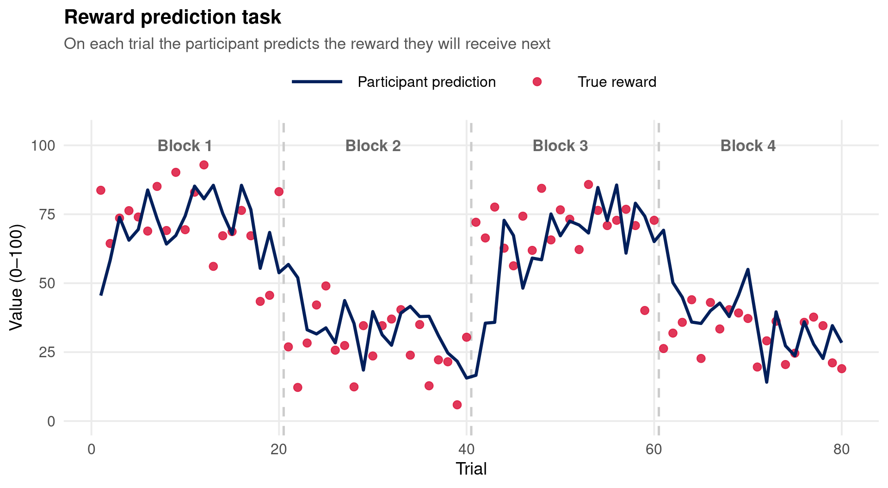
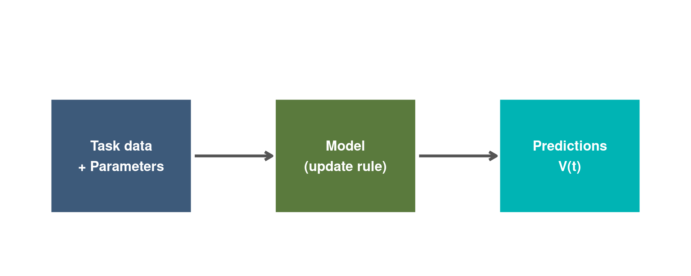
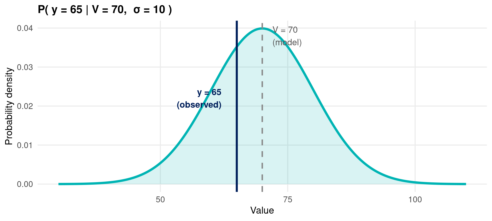
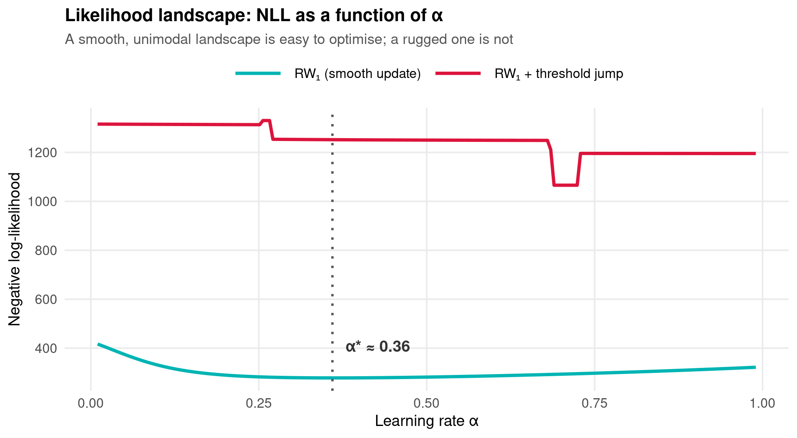
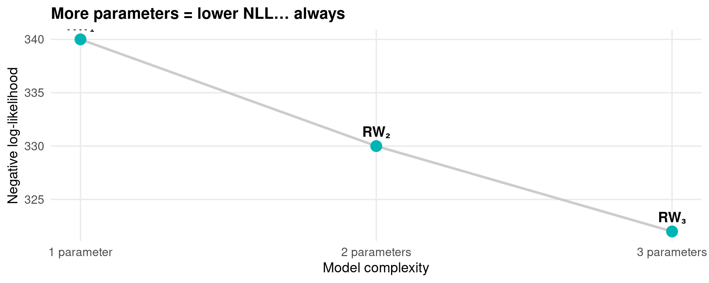
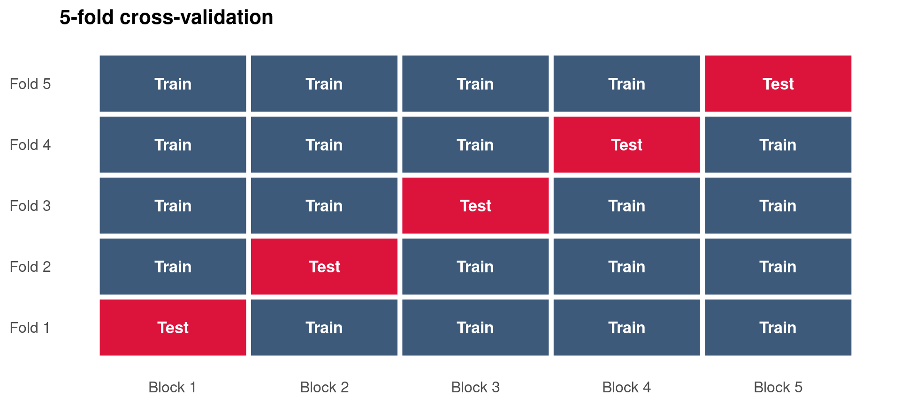
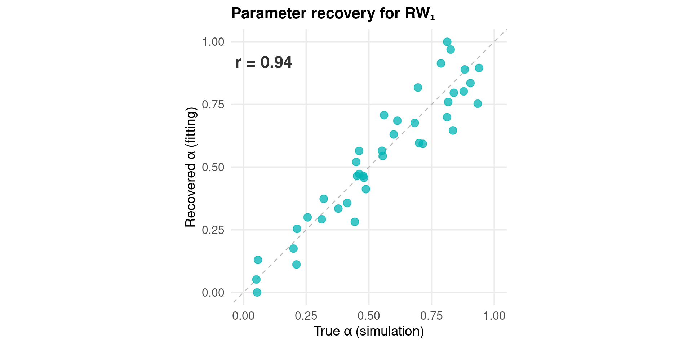
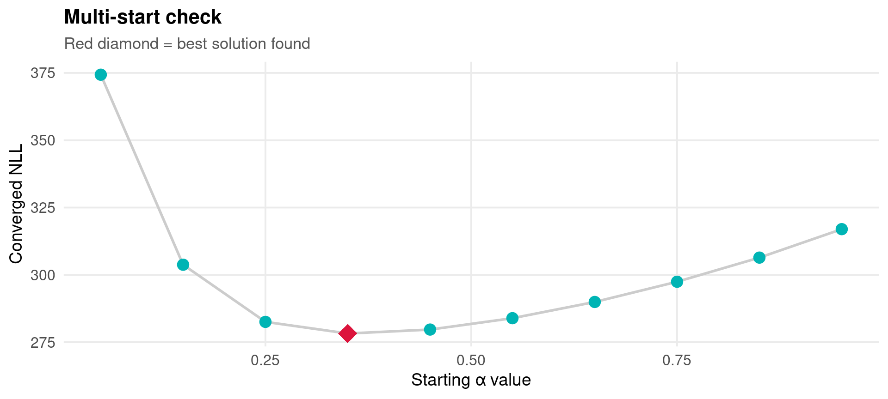

A brief introduction to computational modelling
with hands-on examples in R
Ondrej Zika
University College Dublin
5th May 2026
Learning objectives
Session objectives
- Introduce the idea of modelling — why is it helpful?
- Introduce the key components: model, free parameters, data
- Specifying a model — intuition and R code
- Fitting a model — cost functions and optimisation
- Comparing models — AIC, BIC, cross-validation
- Quality controls — models are not magic
- Further topics — where to go next
Section 1: Introduction
What is computational modelling?
The problem: many constructs in psychology are not directly observable
- Beliefs, attention, value representations, decision strategies …
The promise: a computational model formalises how a cognitive process might work, letting us infer unobservable quantities from observable behaviour.
A computational model is a mathematical description of a process that generates observable behaviour. Its parameters capture individual differences in that process.

Models as formalised hypotheses
A model is more than a description — it is a testable hypothesis
- Formalise your hypothesis as a model
- Fit the model to data → estimate parameters
- Compare models — which fits the data best?
Think of models as keys and data as a lock. The best key is the one that opens the lock most efficiently — it fits the data and does not over-engineer the mechanism.

A familiar example: Rescorla–Wagner
\[\boxed{V(t+1) = V(t) + \alpha \cdot \underbrace{\bigl(R(t) - V(t)\bigr)}_{\delta(t)\ \text{prediction error}}}\]
| Symbol | Meaning |
|---|---|
| \(V(t)\) | Expected value (belief) at trial \(t\) |
| \(R(t)\) | Reward received at trial \(t\) |
| \(\alpha \in (0,1)\) | Learning rate — free parameter |
| \(\delta(t) = R(t) - V(t)\) | Prediction error |
Intuition: update in proportion to how surprised you were.
- \(\alpha \approx 0\) → slow learner, retains history
- \(\alpha \approx 1\) → fast learner, ignores history
Section 2: Key components
Basic building blocks

Design — the task structure: stimuli, schedule, trial order etc.
Data — participant responses: e.g. choices, ratings, RTs.
Parameters — the flexible part. Estimated from data, they capture individual differences (e.g. how fast someone learns).
Model — the mathematical process that generates predictions given design + parameters.
The design: a reward prediction task

● True reward | Dashed lines = reversals
The data: participant predictions

● True reward — Participant prediction | Dashed lines = reversals
What is a model?
A model is a function:
\[\underbrace{\text{Task data}}_{\text{reward schedule}} + \underbrace{\text{Parameters}}_{\alpha,\, v_0,\, \ldots} \;\longrightarrow\; \underbrace{\text{Predictions}}_{V(1),\, V(2),\, \ldots,\, V(T)}\]
Models are generative — they describe a process that could have produced the observed data. Fitting parameters finds the process most consistent with what we observed.
The key question: how probable are the observed data under this model and these parameters?
This is the likelihood — \(P(D \mid \theta, M)\).

Free parameters: interactive exploration
What does the learning rate \(\alpha\) actually do? Move the slider.
Section 3: Specifying a model
Mathematical specification
Linear regression
\[\hat{y} = \beta_0 + \beta_1 x_1 + \cdots + \beta_k x_k\]
\[y \sim \mathcal{N}(\hat{y},\; \sigma^2)\]
- Inputs: predictors \(x_1, \ldots, x_k\)
- Free parameters: \(\beta_0, \ldots, \beta_k\)
- Observation model: Gaussian noise
Rescorla–Wagner (RW₁)
\[V(t+1) = V(t) + \alpha \cdot (R(t) - V(t))\]
\[y_t \sim \mathcal{N}(V_t,\; \sigma^2)\]
- Input: reward sequence \(R(1), \ldots, R(T)\)
- Free parameter: \(\alpha \in (0, 1)\)
- Fixed starting value: \(V(1) = 50\)
- Observation model: Gaussian noise
Both share the same structure: inputs → parameters → predictions → observation model. The RW model is regression with memory — it incorporates temporal dynamics.
RW₁ in R: one free parameter
rw1 <- function(data, params) {
outcomes <- data$outcomes # reward received on each trial (0–100)
n_trials <- data$n_trials
vals <- numeric(n_trials + 1)
vals[1] <- 50 # fixed starting value
for (t in seq_len(n_trials)) {
pe <- outcomes[t] - vals[t] # prediction error
vals[t+1] <- vals[t] + params$alpha * pe
}
list(vals = vals[-1]) # return V(1) … V(T)
}One free parameter: alpha — the learning rate \(\in (0,1)\). vals[t] is the model’s prediction before seeing the outcome on trial \(t\). After observing the outcome, vals[t+1] is updated.
RW₂: estimating the starting value
Adding \(v_0\) as a free parameter
\[V(1) = v_0 \quad \text{(now estimated, not fixed)}\]
\[V(t+1) = V(t) + \alpha \cdot (R(t) - V(t))\]
Free parameters: \(\alpha,\; v_0\)
Explore both parameters:
RW₃: asymmetric learning rates
Separate \(\alpha\) for gains and losses
\[\alpha = \begin{cases} \alpha_b & \text{if } R(t) - V(t) > 0 \quad \text{(better than expected)} \\ \alpha_w & \text{if } R(t) - V(t) \le 0 \quad \text{(worse than expected)} \end{cases}\]
Free parameters: \(\alpha_b,\; \alpha_w,\; v_0\)
Section 4: Fitting a model
The cost function: watching errors in real time
Move the slider — the model predictions and their errors update simultaneously
Cost functions: measuring fit
A model is nothing without a cost function. The cost function quantifies how wrong the model is — and guides parameter estimation.
| Cost function | Formula | Notes |
|---|---|---|
| Sum of errors | \(\sum_t (y_t - \hat{y}_t)\) | Positive and negative errors cancel — bad choice |
| Mean squared error | \(\frac{1}{T}\sum_t (y_t - \hat{y}_t)^2\) | Penalises large errors; widely used |
| Negative log-likelihood | \(-\sum_t \log P(y_t \mid \hat{y}_t, M)\) | Statistically principled; enables model comparison |
For Gaussian observations, minimising MSE is equivalent to maximising likelihood (when \(\sigma\) is fixed). But likelihood generalises to any observation model — Bernoulli, Poisson, log-normal …
Maximum likelihood estimation
The likelihood answers: how probable were the observed data, given this model and these parameters?
\[\mathcal{L}(\theta \mid D, M) = P(D \mid \theta, M)\]
For independent Gaussian observations:
\[P(y_t \mid V_t,\sigma) = \mathcal{N}(y_t;\; V_t,\; \sigma^2)\]
\[\mathcal{L}(\alpha \mid \mathbf{y}) = \prod_{t=1}^{T} \mathcal{N}(y_t;\; V_t(\alpha),\; \sigma^2)\]
Single-trial likelihood in R:

Summing log-likelihoods → NLL
Products become sums in log-space — numerically stable:
\[\log \mathcal{L} = \sum_{t=1}^{T} \log \mathcal{N}(y_t;\; V_t(\alpha),\; \sigma^2)\]
By convention we minimise the negative log-likelihood:
\[\text{NLL}(\alpha) = -\sum_{t=1}^{T} \log \mathcal{N}(y_t;\; V_t(\alpha),\; \sigma^2)\]
Lower NLL = better fit.
Observe how trial-level NLL contributions change with α:
Likelihood landscapes

The threshold model produces a rugged landscape — the optimiser can get stuck. The minimum may appear at many values of α. Always plot your likelihood landscape.
R code: model and likelihood function
Model function (single-cue, 0–1 scale):
rw1_basic <- function(data, params, conf = list()) {
outcomes <- data$outcomes # scaled to 0–1
n_trials <- data$n_trials
vals <- numeric(n_trials + 1)
vals[1] <- 0.5 # fixed start
for (i in seq_len(n_trials)) {
pe <- outcomes[i] - vals[i]
vals[i+1] <- vals[i] + params$alpha * pe
}
list(vals = vals[-1])
}Gaussian negative log-likelihood:
#' @param x numeric vector – parameter values to estimate
#' @param data list: outcomes, n_trials, rating (all 0–1)
#' @param conf list: params (fixed), params2estimate,
#' model_name, obs_sd
#' @return scalar NLL
gaussian_negloglik_fit <- function(x, data, conf = list()) {
params <- conf$params
for (i in seq_along(conf$params2estimate)) {
params[[conf$params2estimate[i]]] <- x[i]
}
model_fun <- load_rating_model(
model_name = conf$model_name,
model_dir = conf$model_dir %||%
file.path("models", "rating_models")
)
model_out <- model_fun(data = data, params = params,
conf = conf)
mu <- clamp01(model_out$vals) # predictions (0–1)
y <- clamp01(data$rating) # observations (0–1)
obs_sd <- conf$obs_sd %||% 0.2
nll <- -sum(dnorm(y, mean = mu, sd = obs_sd, log = TRUE))
nll
}Fitting a model: optimisation in R
library(nloptr) # gradient-free optimisation; also try stats::optim()
conf <- list(
model_name = "rw1",
params = list(alpha = NA),
params2estimate = "alpha",
obs_sd = 0.15
)
# ── always use multiple starting points ───────────────────────────────────────
starts <- seq(0.05, 0.95, by = 0.15)
results <- lapply(starts, function(a0) {
nloptr(
x0 = a0,
eval_f = gaussian_negloglik_fit,
lb = 1e-4,
ub = 1 - 1e-4,
opts = list(algorithm = "NLOPT_LN_BOBYQA",
maxeval = 500,
ftol_rel = 1e-8),
data = my_data,
conf = conf
)
})
# ── select the run with lowest NLL ────────────────────────────────────────────
best <- results[[which.min(sapply(results, `[[`, "objective"))]]
cat("α̂ =", round(best$solution, 3), " | NLL =", round(best$objective, 2))Recommended algorithms: NLOPT_LN_BOBYQA (derivative-free, robust), NLOPT_LD_LBFGS (gradient-based, fast), stats::optim(..., method = "L-BFGS-B"). Always run ≥ 5–10 starting points and take the minimum.
Section 5: Comparing models
Comparing models fairly
Models must be fitted to the same data with the same computational resources. A more complex model will always fit at least as well — we must penalise for flexibility.
The problem: adding parameters always reduces NLL
| Model | Parameters | NLL (example) |
|---|---|---|
| RW₁ | \(\alpha\) | 340 |
| RW₂ | \(\alpha, v_0\) | 330 |
| RW₃ | \(\alpha_b, \alpha_w, v_0\) | 322 |
The most complex model always wins — without a penalty.

AIC and BIC
Akaike Information Criterion
\[\text{AIC} = 2k - 2\hat{\ell}\]
Penalises by \(2\) per free parameter. Asymptotically equivalent to LOO cross-validation.
Bayesian Information Criterion
\[\text{BIC} = k \ln(n) - 2\hat{\ell}\]
Stronger penalty for large \(n\) → favours simpler models.
\(\hat{\ell} = -\text{NLL}\) at best-fit parameters \(k\) = number of free parameters \(n\) = number of observations (trials)
Rule of thumb for \(\Delta\)AIC / \(\Delta\)BIC vs. best model:
| \(\Delta\) | Evidence against |
|---|---|
| 0–2 | Weak |
| 2–6 | Positive |
| 6–10 | Strong |
| > 10 | Very strong |
| Model | k | AIC | ΔAIC | BIC | ΔBIC |
|---|---|---|---|---|---|
| RW₁ | 1 | 682 | 32 | 684.4 | 27.3 |
| RW₂ | 2 | 664 | 14 | 668.8 | 11.7 |
| RW₃ | 3 | 650 | 0 | 657.1 | 0.0 |
Cross-validation
Key idea: estimate out-of-sample predictive accuracy
- Split data into \(K\) folds
- Fit model on \(K-1\) folds
- Evaluate NLL on held-out fold
- Average across all \(K\) folds
Cross-validation directly estimates generalisation — more expensive but makes no distributional assumptions. AIC ≈ LOO-CV asymptotically; BIC penalises more in large samples.
Note: for time-series data (like learning tasks), use blocked or forward-chaining CV to respect temporal order.

Fitting all three models: R code
library(nloptr)
# Simulate 20 participants with individual true alphas
set.seed(99)
n_participants <- 20
true_alphas <- rbeta(n_participants, 3, 5) # draws from Beta(3,5)
fit_participant <- function(p_data, model_name, k) {
starts <- seq(0.05, 0.95, length.out = 8)
results <- lapply(starts, \(a0)
nloptr(x0 = rep(a0, k), eval_f = gaussian_negloglik_fit,
lb = rep(1e-4, k), ub = rep(1 - 1e-4, k),
opts = list(algorithm = "NLOPT_LN_BOBYQA", maxeval = 400),
data = p_data,
conf = list(model_name = model_name, obs_sd = 0.15,
params2estimate = model_params[[model_name]]))
)
best <- results[[which.min(sapply(results, `[[`, "objective"))]]
list(nll = best$objective, params = best$solution)
}
# Fit all three models to all participants
fits <- lapply(seq_len(n_participants), function(p) {
p_data <- simulate_participant(true_alphas[p], outcomes)
list(
rw1 = fit_participant(p_data, "rw1", k = 1),
rw2 = fit_participant(p_data, "rw2", k = 2),
rw3 = fit_participant(p_data, "rw3", k = 3)
)
})
# AIC matrix: models × participants
aic_mat <- sapply(fits, \(f)
c(rw1 = 2*1 + 2*f$rw1$nll,
rw2 = 2*2 + 2*f$rw2$nll,
rw3 = 2*3 + 2*f$rw3$nll)
)
rowMeans(aic_mat) # group-average AICSection 6: Quality controls
Quality controls: models are not magic
A well-fitting model does not guarantee that its parameters are meaningful. Validate your workflow before drawing conclusions from real data.
a) Can my data support estimation?
- Is the task designed to dissociate parameter values?
- Do participants show sufficient behavioural variability?
- Is the paradigm long enough for the model to converge?
b) Parameter recovery
- Simulate data from known \(\theta_\text{true}\)
- Fit model → recover \(\hat{\theta}\)
- Plot \(\theta_\text{true}\) vs. \(\hat{\theta}\)
- Want: tight, unbiased correlation along diagonal
c) Model recovery
- Simulate data from Model A
- Fit both Model A and Model B
- Compare AIC / BIC
- Does the data-generating model reliably win?
Wilson & Collins (2019)
Ten simple rules for the computational modelling of behavioural data
Wilson & Collins, eLife (2019)
Their Figure 1 illustrates the complete recommended workflow:
- Specify competing models mathematically
- Simulate behaviour from each model
- Perform parameter recovery — can you get back what you put in?
- Perform model recovery — can you identify the true model?
- Fit real data and report with appropriate uncertainty
- Repeat checks when the task or model changes
Add the figure to img/wilson_collins_2019_fig1.png and uncomment the code chunk below.

Rule 11: verify your fitting algorithm
Wilson & Collins give 10 rules — here is a critical addition: always verify that the optimiser has actually converged to a meaningful minimum.
Practical checks:
- Multiple starting points — do all roads lead to the same minimum?
- Plot the likelihood landscape — is it smooth and unimodal?
- Check convergence codes —
nloptr$status,optim$convergence - Verify on simulated data — recovery should work before fitting real data
- Compare algorithms —
BOBYQA,L-BFGS-B,Nelder-Meadshould agree
If different starting points give wildly different estimates, your cost function is rugged, under-constrained, or numerically unstable. Fix the model, not the algorithm.

Section 7: Further topics
Hierarchical estimation
The problem with participant-by-participant fitting:
- Noisy data → unreliable individual estimates
- No information sharing across participants
- Extreme parameter values can arise by chance
Hierarchical models add a group-level distribution over parameters:
\[\theta_i \sim \mathcal{N}(\mu_\theta, \sigma_\theta^2)\]
\[\mathbf{y}_i \mid \theta_i \sim P(\mathbf{y}_i \mid \theta_i, M)\]
Parameters are partially pooled — individuals inform the group, the group regularises individuals.
When to use hierarchical models:
- Small number of trials per participant
- Interest in group-level effects
- Comparing patient vs. control groups
- Reducing Type I error in parameter inference
R tools:
| Package | Method |
|---|---|
cmdstanr / rstan |
Full Bayesian (HMC) |
hBayesDM |
Pre-built cognitive models |
brms |
Formula-based Bayesian GLMMs |
Combining process models with GLMs
The idea: use a cognitive model to generate trial-level regressors, then link them to a physiological or neural signal via a GLM.
Example: skin conductance and prediction error
\[\text{SCR}(t) = \beta_0 + \beta_1 \cdot \underbrace{\delta(t)}_{\text{RW PE}} + \varepsilon(t)\]
- Fit RW to behavioural data → extract prediction error \(\delta(t)\)
- Use \(\delta(t)\) as a GLM regressor for SCR (or BOLD, pupil, …)
- \(\hat{\beta}_1\) captures the strength of the prediction-error signal
The same principle applies to:
- Surprise → pupil dilation
- Uncertainty → reaction time
- Value → BOLD in ventral striatum
Placeholder — paste your own example here
(figure, analysis output, or code snippet)
Further reading
Essential
Wilson & Collins (2019) Ten simple rules for the computational modelling of behavioural data eLife · doi:10.7554/eLife.49547
Recommended
Dayan & Abbott (2001) — Theoretical Neuroscience (MIT Press) Part I covers neural coding and rate models
Sutton & Barto (2018) — Reinforcement Learning: An Introduction Full text free at incompleteideas.net/book/the-book.html
Gelman et al. (2013) — Bayesian Data Analysis (3rd ed.) For hierarchical and Bayesian approaches
R packages
| Package | Purpose |
|---|---|
nloptr |
Gradient-free optimisation |
DEoptim |
Differential evolution (global) |
hBayesDM |
Stan-based cognitive models |
cmdstanr |
Full Bayesian inference |
ggplot2 |
All the plots |
Start simple. Fit RW₁ first. Add complexity only if it is justified by the data.
Ondrej Zika | University College Dublin | 5th May 2026